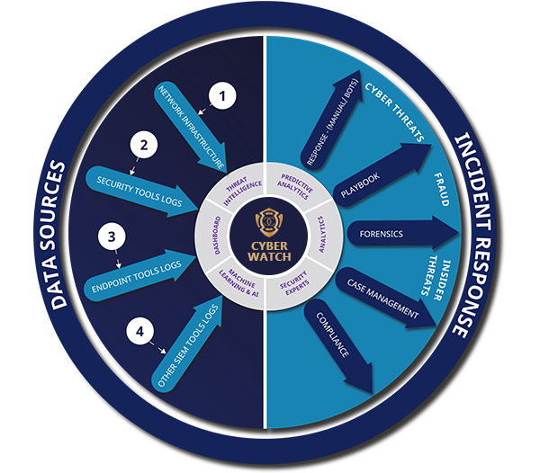
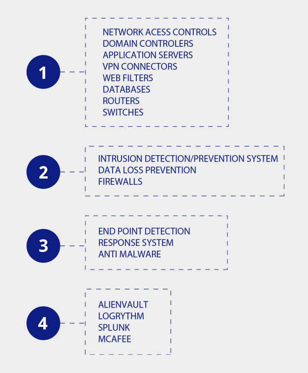

Managed Detection & Response Services (MDR)
A plan of action for people, planet and prosperity !
CyberWatch
(CyberCop SIEM & SOC service)
What We Do
CyberWatch includes a technology solution which is a Security Incident & Event Management System (SIEM) & a Security Operations Center (SOC) monitoring service 24/7. The service monitors client’s networks, applications and/or end points for cyber threats.
Quick facts
Cloud hosted or On-premise implementation of the SIEM.
Log collector located in client’s environment. Client or CyberCop to invest in the hardware.
CyberCop will remotely set up the log collector.
Security events will be sent to CyberCop using anencrypted channel such as a site to site VPN.
24*7*365 – Round the clock monitoring of threats and security events by CyberCop Security Operations Centre (SOC).
Retention of security events – 90 days online and 1 year offline.
The Service doesn’t include the retention of Raw Logs. CyberCop recommends a server be set up on premise to store the raw logs for a period determined by the Client.
Customer portal with real time attack information and status of review.
CyberWatch SOC consists of security analysts that provide real time monitoring of your networks, applications and end points to identify, contain and respond to internal and/or external attacks.
SOC analysts are highly trained information security professionals that have the required expertise to identify potential threats and guide organization’s IT teams on the appropriate response.


CyberWatch – Hybrid Service
(Client Owns the SIEM & SOC Monitoring by CyberCop)
What We Do
CyberWatch-Hybrid includes a technology solution – SIEM owned by the client & a Security Operations Center (SOC) monitoring service 24/7 by CyberCop. The service monitors client’s networks, applications and or end points for cyber threats via the SIEM tool invested by the client.
Quick facts
This service encompasses monitoring and management of the SIEM tool of other vendors.
The client owns the SIEM tool.
The client has the option to assign the management of the SIEM tool to CyberCop.
CyberCop SOC monitors the client’s environment, round the clock (24*7*365), for cyber threats using Client’s SIEM tool.
SOC analysts are highly trained information security professionals that has the required expertise to identify potential threats and guide organization’s IT teams on the appropriate response.
CyberCop provides Quarterly Security Reviews as part of our Service Delivery. The Quarterly Reviews will provide a snapshot of the security posture of the Clients environment, assess new requirements and address opportunities for improvement.
Forensic Analysis if required.
Our Expertise
CyberCop supports the monitoring of the following SIEM tools: